- NIM = 19222500193
- NAMA = Johan Alamsyah
- Kelompok = SI5J
kesimpulan atau hasil pertemuan 9 yang saya ambil adalah:
- Pertemuan 9
- Dipertemuan kali ini kita mencoba membuat hosting
- setelah itu tentukan nama hosting dan pasword nya sesuai yang kita mau
- setelah itu kita klik copy link hosting yang kita buat
- sesudah itu kita akan menuju link web kita klik tool/file manager setelah itu akan muncul upload file
- lalu kita buat index.php lalu kita edit dicodingan tersebut dengan tulisan hello dunia
- kemudian kita bisa memidahkan file woodpress kita tersebut ke hosting yang kita buat dengan mengubah di sql nya dll
- setelah itu kita zip file woodpress yang sudah kita ubah lalu klik upluad file kita ke hosting yang kita buat
- sekian terimakasih
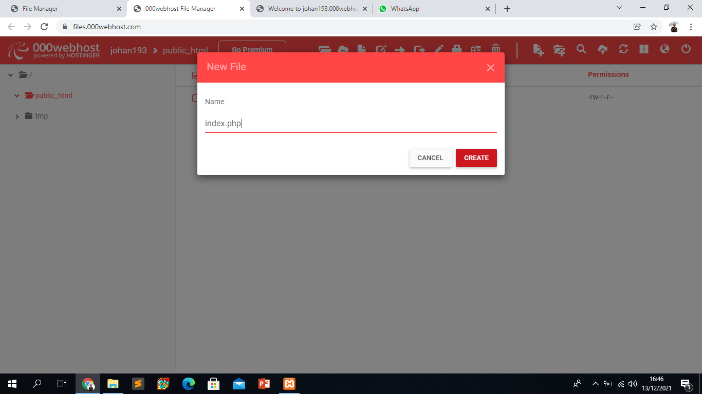
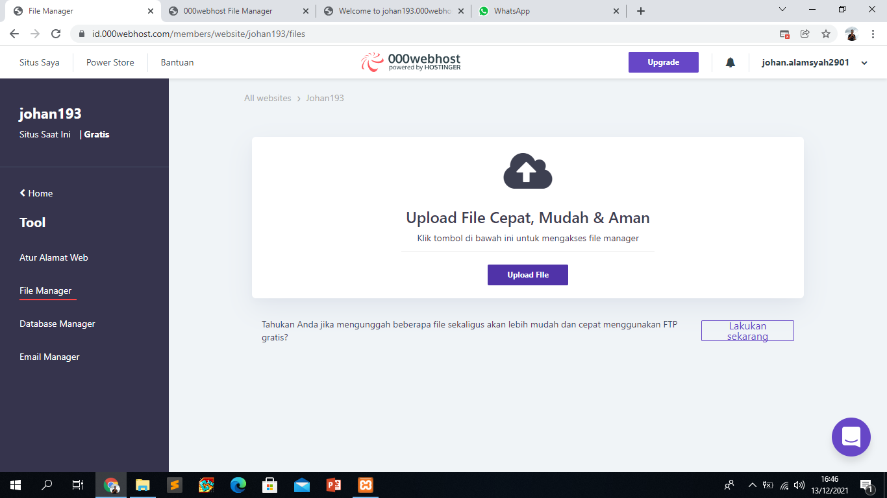
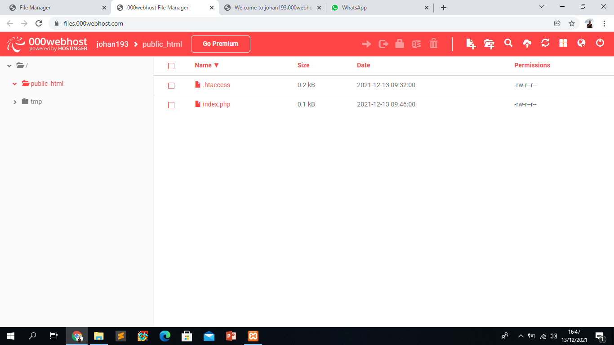
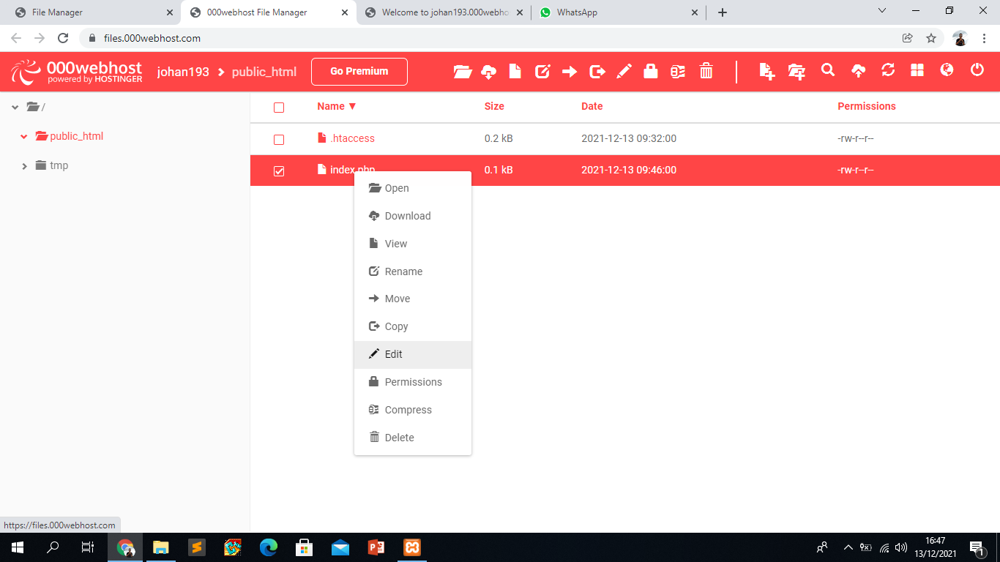
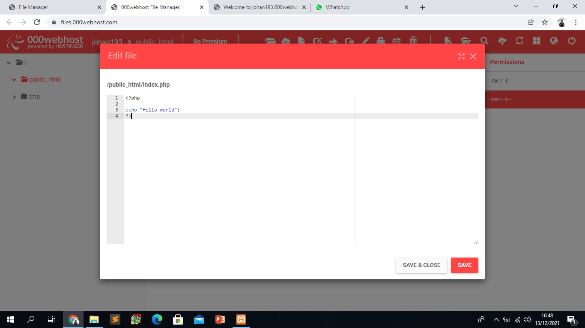
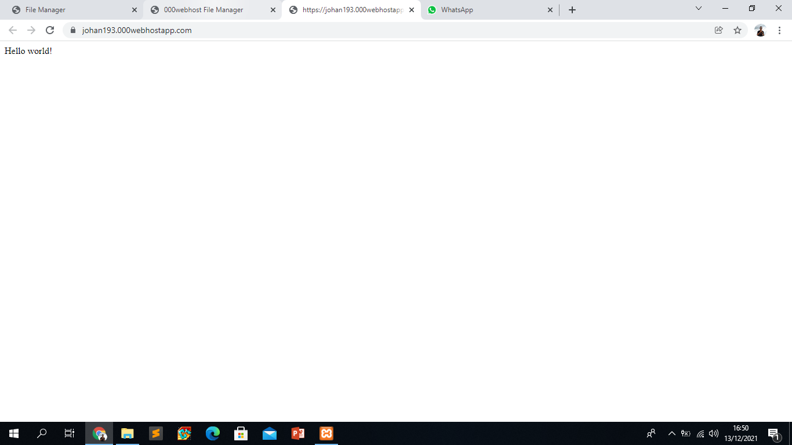
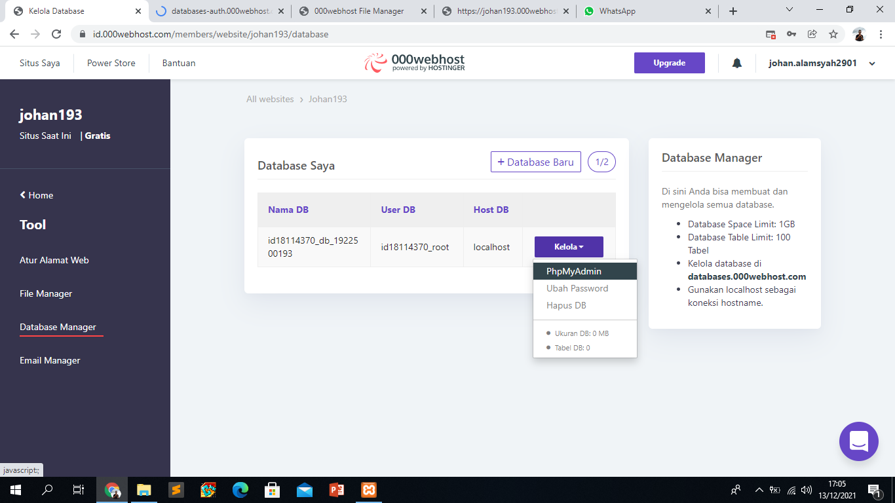
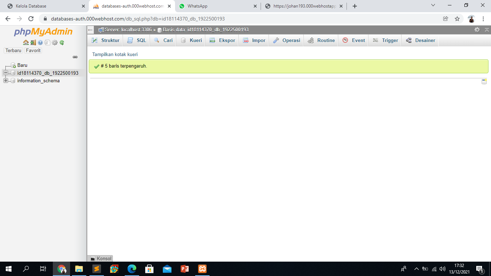
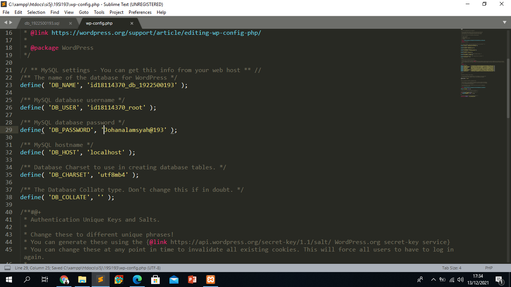
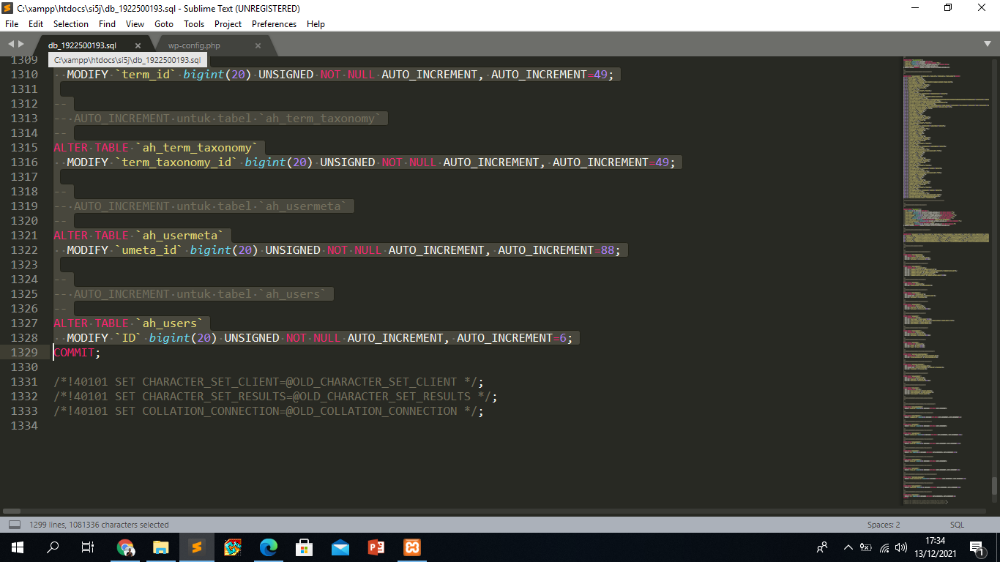
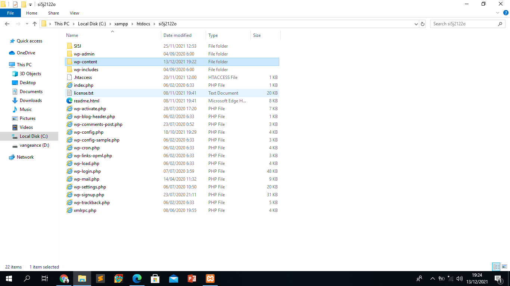